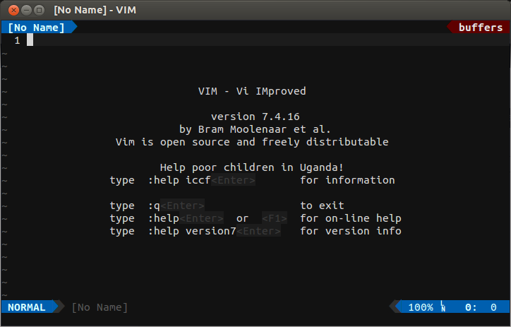
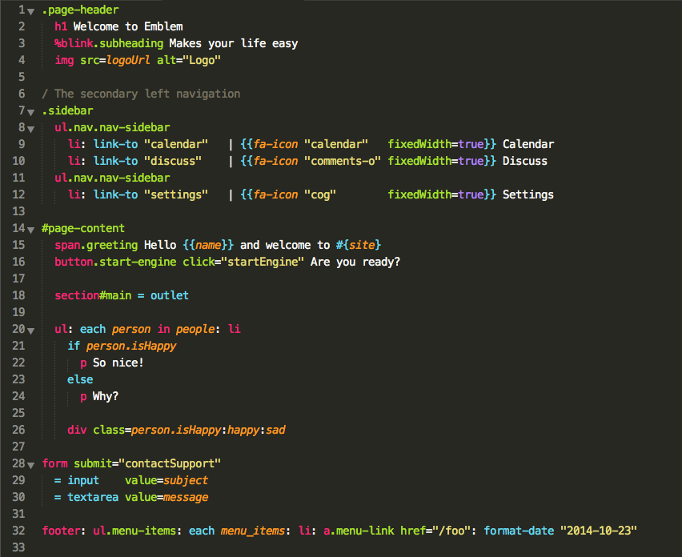
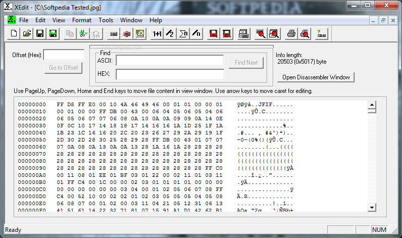

This is a webpage that discusses the various types of Text Editors.
NOTE: This webpage was created using the Vim text editor.
Background Definitions
Line Editor: text editor that involves the user modifying document text by entering in
commands on a text-only terminal.
PDP-1 (Programmed Data Processor-1): computer which was capable of running
Colossal Typewriter, one of the earliest computer text editors.
Visual Editor / Full-Screen Editor: text editor that uses a text or graphical user
interface to display text in an easy to read fashion.

Vim: Vi IMproved, A visual editor created by Bram Moolenaar in 1991 originally
for the Amiga computer.
Common Features Of Text Editors
Find And Replace: Searching and replacing text, which can be done by using regular expressions.
Cut, Copy, And Paste: The ability to move and duplicate text throughout a file.
Text Formatting: The ability to use line wrap, auto-indentation, bullet lists,
commenting, syntax highlighting.
Undo And Redo: The ability to make corrections, and also return to a future statement.
Advanced Features Of Text Editors
o
Data Transformation: Merging the contents of another text file into the one that's
currently being edited.
Filtering: The ability to send all or portions of a file to another utility, which includes
sorting alphabetically or numerically, indentation of code, etc.
Syntax Highlighting: Highlighting of source code, markup languages, and configuration files
to make text within code more legible, and more stylized for the end user.
Extensibility: The ability to use plugins to allow for additional features, and to
customize functionality (ex: key bindings for programming languages and version control systems)

Syntax highlighting which makes reading and writing code much easier.
Types Of Specialized Editors
Source Code Editors: Text editors for the purpose of writing and editing source code.
Folding Editors: Text editors that are derivatives of Xedit.
IDEs: Integrated Development Environments, which are designed to manage and streamline
large programming projects.
Collaborative Editors: Text editors that allow multiple users to work on the same
document simultaneously from remote locations over a network, which includes changes that
are tracked and merged into the document automatically to avoid conflicting edits.
Distraction-free Editors: Minimalistic text editors that have the purpose of isolating
the writer from the rest of the applications and operating system.

Xedit: A visual editor created by IBM employee, Xavier de Lamberterie for the use on
IBM 3270 terminals, which supports automatic line numbers, and has commands that operate
on blocks of lines.
Text Editor Quiz
What do you think is the best text editor?
Status: No Input Yet
Why don't you think that the best text editor is Vim?
Status: No Input Yet
What's the first name of the creator of the Vim text editor?
Status: No Input Yet
What's the first name of the creator of the Emacs text editor?
Status: No Input Yet
What's the first name of the creator of the Vim text editor?
What's the first text editor that you used?
Status: No Input Yet
What's the name of your favorite font?
Status: No Input Yet
What's the name of your favorite text color?
Status: No Input Yet
List Of Text Editors You Enjoy (Eliminate The Ones You Don't By Clicking The Name!)